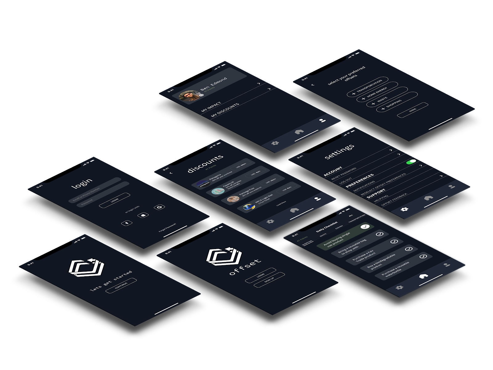
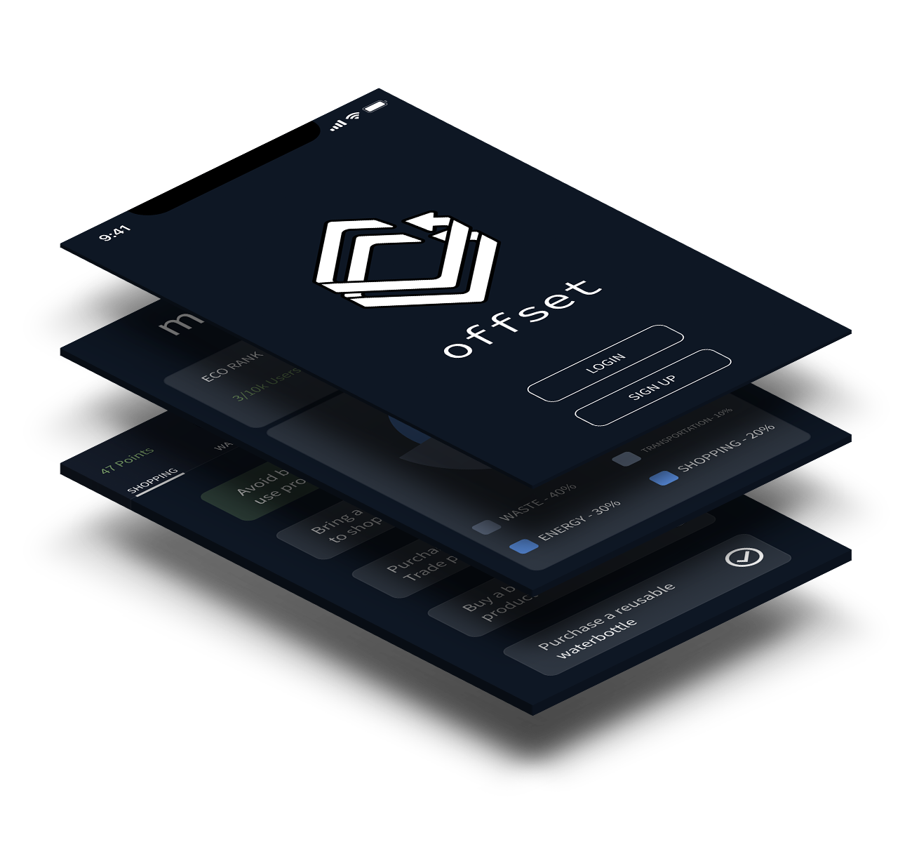
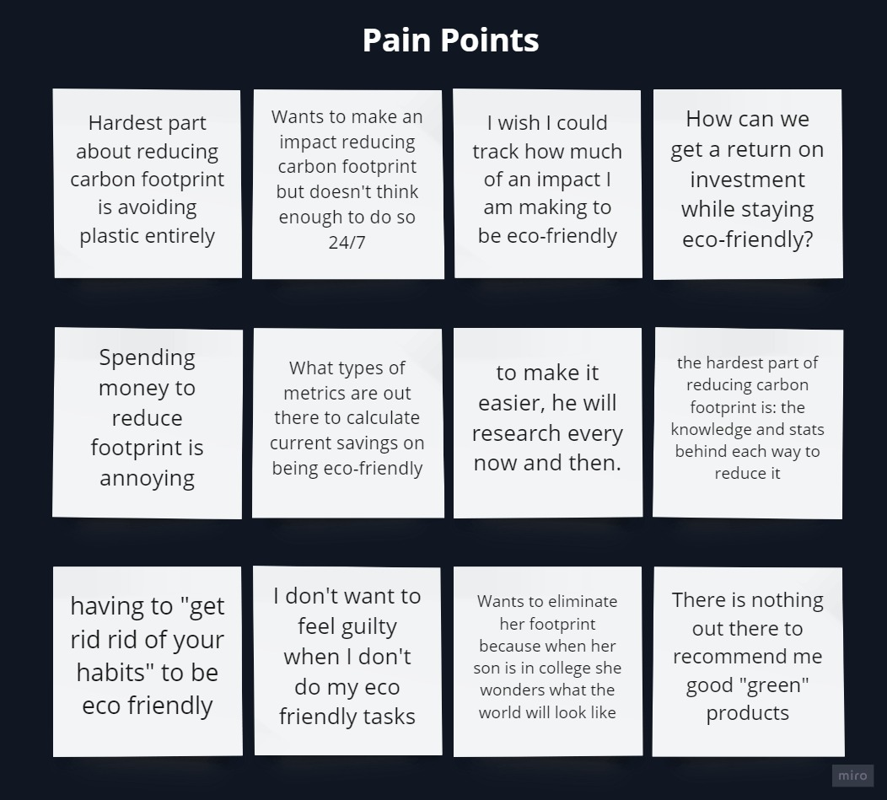
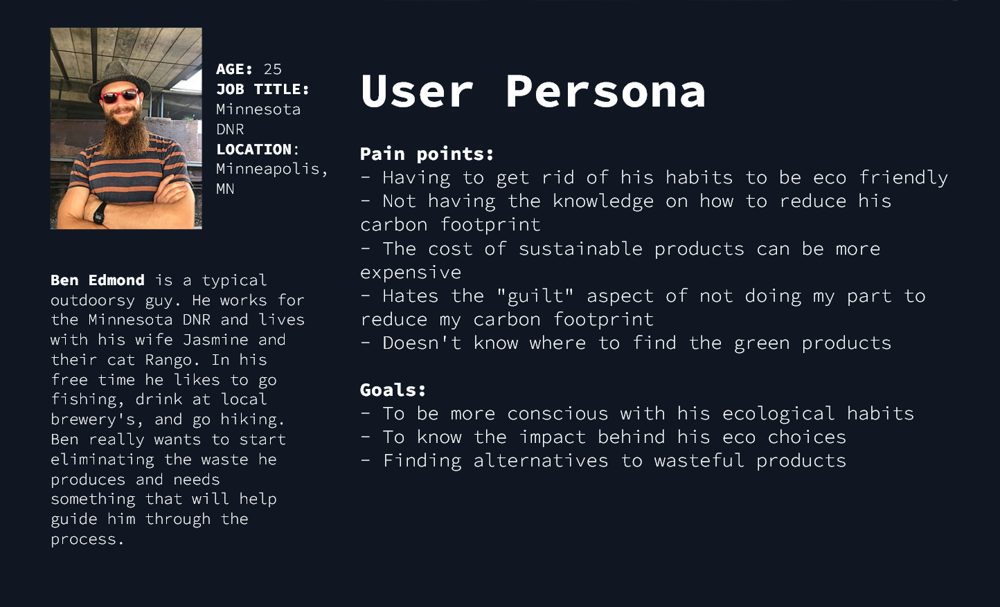
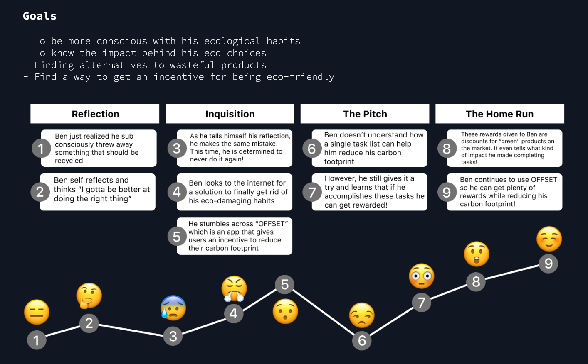
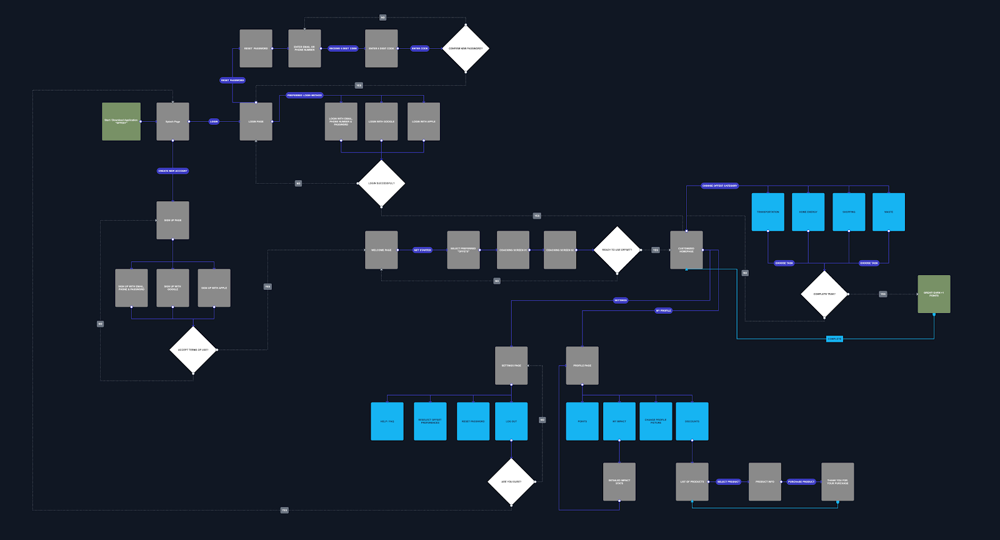

Offset - Get incentive to go green
UX/UI Case Study
 Concept
Offset is designed to keep eco friendly users coming back for more. The goal is to complete tasks that reduce their carbon footprint, then get rewarded for doing so.
The Problem
Users are having a hard time getting into less wasteful practices due to not understanding the impact and not finding a way to break their habits
The Solution
Offset will help users kick their wasteful habits by providing day to day eco friendly tasks, show the helpful impact they make upon completion, and then reward them with discounts for their progress. It becomes a "win-win" situation for the user and the stakeholders. Company's get their products bought and users get to enjoy them at a cheaper price, all while reducing their carbon footprint as a whole.
Tools Used


Phase 1: Research
To further progress towards a better Offset experience, researching and brainstorming sessions were conducted. As a user researcher, I want to understand how a user base can reduce their carbon footprint through technology, so an interview with five different people was conducted. These included questions on introductions, demographics, behavioral tendencies, and problem identification responses. The received data was organized into user insights and an affinity diagram which helped synthesize a user persona.
User Persona

Ben Edmond is a typical outdoorsy guy. He works for the Minnesota DNR and lives with his wife Jasmine and their cat Rango. In his free time he likes to go fishing, drink at local brewery's, and go hiking. Ben really wants to start eliminating the waste he produces during activities and needs something that will help guide him through the process.
Phase 2: Definition
User Insight
Ben Edmond is an organizational cat dad, who is good at maintaining his facial hair. He really wants to start being more eco-friendly, but he doesn't know where to begin. He realizes some of his habits can be wasteful so he needs an application that will help guide him through the process.
Problem Statement
OFFSET will be designed to help users kick their wasteful habits by analyzing their day to day activities and suggesting ways they can reduce their carbon footprint. We noticed that our users are having a hard time getting into less wasteful practices due to not understanding the impact. How might we provide a direct experience and reward system that encourages our users to reduce their carbon footprint.
Phase 3: Ideation
Feature Prioritization
After the previous ideation processes helped come up with opportunities for offset, prioritizing features with a "I like, I wish, what if" method made it easier to carry on to a user flow. The results were put into a complexity matrix below. There were several different ideas tossed about but I decided to feature the main points that were actually used or important enough.

Select Features (Some Not Shown On Image):
High Impact and High Complexity
- "What if I could receive actual updates on global progress, so I can compare how I'm doing vs the world?"
- Create a system that rewards the user for good progress on reducing your carbon footprint
- What if there was a feature that included all the sustainable businesses in my surroundings
- I wish sustainable products weren't expensive
High Impact and Low Complexity
- Share my progress with my friends & family
- Send me sustainable products as rewards
- Getting helpful tips / notifications on how I can do better
Low Impact and High Complexity
- Filter through sustainability categories (transportation, food, waste, etc.)
- Being guided through an application
Low Impact and Low Complexity
- Being able to break habits
- Having products being recommended to me
- Profile to share with people and blog about my experience
UX Scenario
Ben is looking to reduce his carbon footprint after self reflection. He knows that he should be on top of it all the time, but the consistency is not there. As he sets goals for himself, he thinks about what's out there on the internet that might give him help on breaking his non eco-friendly practices. The answer might be on a mobile device.
Opportunities
- With onboarding, we have to make sure users know how impactful the application and their habits can be
- Partner with other Eco Friendly companies to build a reputation & rank higher on SEO
- Make sure users are aware of the reward system before signing up
- Offset could incorporate some sort of “quick tips” that give users a glance of the impact a “task completed” has before they even complete a task.
- Introduce a reward system that encourages users to actively engage with the application.
Phase 4: Prototyping
User Flow
Offset's user flow caters to any user, providing a comfortable experience to complete eco friendly tasks, and receive points for doing so. We made sure to include a process of being able to see the impact of the users carbon footprint reduction and use your earned points towards eco friendly products. Our sign in methods are self explanatory, but are better represented in the final prototype. A few screen shots of the process are shown, but you can view the entire user flow by clicking here.
Wireframing
Offset's team each individually created a sketched prototype.
We were able to converse on the ideation of our multiple prototypes.
Our sign in processes seemed to align with each others and the same mostly goes for the onboarding process.
The only part where we ran into roadblocks was during the main functions of the app. I will be featuring mine for the time being.
1. When users complete tasks it has to be proven somehow. Otherwise the option is reduce the amount of tasks they can complete in one day so it creates a method of spam protection.
2. While a new user is selecting their "preferred offsets" during the onboarding process, we weren't really sure on how those would be implemented.
At the time, It was a possibility that it could be used as way to personalize your task list.
Instead, It was used as filter which is better represented in the final prototype
3. In the sketched prototypes, we were torn on how we wanted the data in "my impact" to be represented.